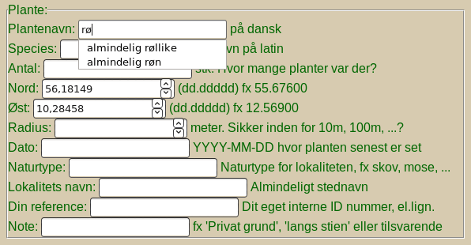
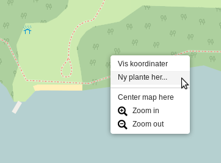
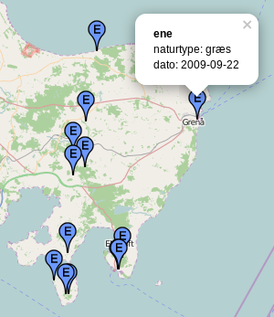
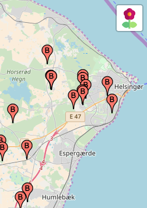

Version 0.9.0 - Nyt webhotel
(2023-04-02)
Så er vi flyttet til nyt webhotel
Som nogen har bemærket, og måske endda været generet af, så besluttede vores gamle ISP (internet service provider) at reducerer antallet af tilladte PHP-tråde fra 20 til 10, oven i købet ganske uden varsel.
Da de forskellige plantekategorier på kortet kører parallelt i hver sin PHP-tråd, så har vi desværre været væsentligt handikappet af det.
Desværre var de fuldstændigt imum overfor vores argument om at de havde brudt aftalen og derfor burde hjælpe med at finde en løsning - Derfor er vi nu flyttet til en anden ISP, og alting ser ud til at virke, igen.
top
Version 0.8.0 - Nu med https://
(2020-07-11)
Så har vi fået httpS
Det har længe været et ønske at få Snapseatlas.dk SSL certificeret. Det var meget bøvlet med vore gemle internetudbyder, men nu har vi fået et certifikat.
Du vil ikke opleve den store forskel som bruger, men adressefeltet i din webbrowser skulle gerne have fået en grøn hængelås, eller tilsvarende, som tegn på at al trafik mellem dig og snapseatlas.dk nu er krypteret.
Hvis du mod forventning ikke oplever denne ændring, så husk at opdatere dine bookmarks, og ellers tilføj det ny S i adressefeltet manuelt, så cachen i din webbrowser kan blive opdateret. Alle sider på Snapseatlas.dk kører https://
top
Version 0.7.0 - Bugfix efter PHP opgradering
(2020-01-28)
Så er vi oppe at køre igen ...
Det var en ændring i den nyeste version af PHP (ver. 7.2.27) som spændte ben for det modul det henter plantepunkterne i SQL databasen. Det er fixet, og vi er tilbage på sporet. Det betyder også at problemet med hastigheden består - det vil sige at der stadigt skal laves noget om i bagbutikken før vi væsentligt kan øge mængden af punkter på kortet. Jeg håber det bliver noget med Marker Clusters
I skal dog ikke holde jer tilbage med at melde data ind via kortet, den kan sagtens klare de næste 10.000 også, så kom frisk!
Kontaktoplysninger findes i footeren, her på siden, hvis man vil være med til at lave den næste version.
top
Komplet nedbrud :-(
(2020-01-26)
Snapseatlas.dk har haft sit andet nedbrud - og denne gang er det totalt. Vi ved ikke hvad det skyldes endnu, men mistanken er på at vore web host firma har opgraderet PHP, og på en eller anden måde er Snapseatlas ikke kompatibelt med det.
Vi arbejder på sagen, men de første 24 timer, med opgradering af alle de andre pakker, har ikke ledt til nogen quick-fix. Lige nu overvejer vi at benytte lejligheden til at indføre mere omfattende ændringer. Snapseatlas har været tynget på hastighed af de ca. 30.000 punkter i databasen, og vi har ca. 200.000 ny punkter på vej, så der skulle aligevel ændringer til.
Frivillige, især Leaflet, JS, PHP, m.v. programører er meget velkomne til at melde sig. Kontaktoplysninger findes i footeren, her på siden.
top
Version 0.6.0 - En væsentlig opgradering
(2018-05-13)
Snapseatlas.dk har haft sit første nedbrud i årevis. Nogle brugere fik en "Cross-Origin Resource Sharing" fejl, og kunne ikke se planterne på kortet. Det skyldes formentlig at web-serveren og database-serveren står i hver deres domæne. Det tog lidt tid at finde ud af, da nogle browsere kunne kompencerer for problemet. Efter en opgradering af noget af det underliggende software - noget vi har forsømt længe - kører vi nu Leaflet 1.3.1 og jQuery 3.3.1 og nyeste verion af Leaflet.contextmenu (fra marts 2017). Det ser ud til at det har løst problemerne med "Cross-Origin Resource Sharing", men I må endeligt raporterer hvis I oplever noget.
top
Version 0.5.1 - Nu med auto-complete
(2016-05-16)

Snapseatlas.dk har fået auto-complete, som gætter hvilket plantenavn du gerne vil skrive.
Det findes i formularen til indtastning af nye planter. Du behøver altså ikke længere at kunne huske den præcise stavemåde af plantenavnene, du skriver bare nogle få bogstaver og så får du en short-list af de navne i databasen som passer til det tastede. Det er en stor hjælp ved indtastningen, og det hjælper til at minimerer indtastningsfejl i databasen. Det er især en stor hjælp hvis man vil indtaste det latinske navn.
top
Version 0.5.0 - Nu med højre-klik
(2016-03-25)

Snapseatlas.dk har fået højreklik, som åbner en lille 'context menu'.
Den primære funktion er at gøre indtastning af ny planter meget lettere. Nu kan du bare zomme ind til det voksested du kender, højreklikke på stedet, og så åbner indtastningssiden - og de klikkede koordinater er allerede udfyldt i Nord og Øst felterne. Du skal bare skrive hvad det er for en plante, og evt. andre oplysninger.
top
Bedre pop-up
(2015-09-05)

Nu viser pop-up'en lidt mere af den information som ligger i data basen. Tidligere blev kun vist plantenavn, nu kan man også se naturtypen og lokalitetsnavn for det sted den vokser, og man kan se hvornår og af hvem den er observeret. Hvis der er en note tilknyttet bliver den også vist, men det er de færreste fund som har noter tilknyttet. Hvis der ikke vises kilde (hvor informationen stammer fra) så kommer den fra GBIF (Global Biodiversity Information Facility)
top
Hvordan finder jeg koordinater til at indberette?
(2015-07-25, opdateret 2016-03-25)
Med det ny højreklik kan du åbne en context-menu, som giver adgang til bl.a. 'Vis koordinater'
Hvis du gerne vil indberette dine egne findesteder, så skal du oplyse koordinater. Hvis din telefon ikke kan den slags, og du ikke lige har en GPS så findes der en speciel version af Snapseatlas kortet, som viser koordinaterne på alle steder du klikker.
top
Kan jeg få alle data i databasen udleveret?
(2015-07-24)
Selvfølgeligt kan du det!
Nogle vil gerne lege videre med data i deres egen software, og det må de selvfølgeligt gerne. Nogen vil kunne regne det ud selv, ved at kikke i koden bag webkortet, men det er faktisk ikke nogen hemmelighed. Man kan downloade hele databasen, som et +30.000 liniers tekstdokument i JSON format ved at klikke her
Hvis du vil vide hvilke arter der finde i databasen, og hvor mange der er af hver, så kan du gå ind her Species Count. De er opgjort per latinsk navn, og sorteret efter antal forekomster.
Endeligt er det muligt at kombinerer de to, men det kræver du selv taster URL'en i hånden. Man finder et latinsk navn i Species Count, og så kan man udtrække alle forekomster af denne art, fx alle Æbler (kik nøje på url'en).. Det er enda muligt at kombinerer er arts afgrænsning med en geografisk afgrænsning til en box, fx Perikon på Møn (sådan ca.).
Inter er skjult, alt er åbent tilgængeligt, så det er bare at gå i gang. Eneste betingelse er at hvis du bringer noget af det videre, så skal du citere Snapseatlas.dk - det syntes vi er okay...
top
Nu virker det også på små skærme
Version 0.4.0 (2015-07-21)
Så er problemet fixet. Nu virker kortet også på computere med små skærme, på iPads og på mobiltelefoner. Den tidligere version var altid 1300x600 pixels, og derfor kunne man ikke se menuen i øverste højre hjørne, hvis man havde en smallere skærm.
top
Hvordan virker kortet?
Kortet er et ganske simpelt interaktivt webkort. De virtuelle 'knappenåle' viser hvor planter vokser.
Du kan trække kortet rundt med musen. Hvis du dobbeltklikker i kortet ,zoomer det ind. Du kan også zoome med (+) og (-) knapperne i kortets øverste venstre hjørne, og ved at rulle med musens hjul. Hvis du klikker på en knappenål kommer en popup med ekstra information om planten, eller findestedet.
I øverste højre hjørne findes en kort menu (Blomster-knappen) som giver adgang til at vælge andet baggrundskort, samt til at tænde og slukke for de forskellige planter. Kortet er koblet direkte til en database over planter, det har den fordel at det altid er opdateret ift. databasens indhold, men det har også en ulempe. Hvis du tænder for mange planter, og zoomer ud, så skal der hentes mange planter i databasen for hver gang skærmen skal opdateres, derfor kan der komme forsinkelse på skærmtegningen på flere sekunder. Hvis det sker, så vælg færre planter ad gangen og/eller zoom lidt tættere på...
top
Hvilke planter er med?
For øjeblikket findes knapt 20 forskellige planter registeret på kortet. De er udvalgt fordi de er interessante ift. kryddersnaps. Der kommer måske flere forskellige planter senere, men det vides ikke lige hvornår, projektet køre rent på frivilligt arbejde. Der kommer ikke planter i databasen som ikke er relevante for kryddersnaps.
Du kan se en aktuel oversigt over databasens indhold af planter her, men bemærk at få arter ikke vises på kortet (fx æbler).
top
Hvor kommer informationene fra?
Informationen om planternes voksesteder kommer i alt væsentlighed fra GBIF (Global Biodiversity Information Facility) og er samlet ind af videnskabsfolk, til brug i forskning i biodiversitet og hvordan denne udvikler sig, bl.a. som følge af klimaforandringer. Data er frie og kan frit bruges. De er super veldokumenterede og kan dermed formodes de at være ret pålidelige.
Der findes også informationer fra andre kilder i databasen, dels mine egne findesteder, dels findesteder som jeg har fået fortalt af venner inden for kryddersnapse brygning. Alle findesteder i databasen er markeret med hvem som har indberettet fundet, så der opretholdes sporbarhed på informationerne. Der er pt. +30.000 planter i databasen.
Baggrundskortene kommer fra forskellige frie kortservere, bl.a. OSM (Open Street Maps). Læs evt. mere om dette under 'Credits'.
top
Hvilket software har i brugt til at lave det?
Vi har næsten kun brugt FOSS (Free Open Source Software). Der er enkelte gange blevet brugt en windows computer, og da windows operativsystem ikke er FOSS, kan vi ikke 100% sige at vi ikke har brugt komersielt software, men næsten.
Konkret har jeg kendskab til at vi har brugt nedenstående software, men listen er nok ikke komplet.
- Linux - Jeg bruger Linux computere. Serveren hvor vi hoster kører også Linux
- Apache - webserveren køre Apache
- MySQL - databasen er en mysql database
- phpMyAdmin - til at administrere databasen
- Leaflet - Til at opbygge det interaktive webkort
- jQuery - Til at få det hele til at glide lidt lettere ...
- Eclipse - Til at skrive programmer i JavaScript, php, Python, og til html.
- Filezilla - til at oploade via FTP
- Atom - Den seneste yndlings editor til html m.v.
- GEdit og SciTE - til mindre text redigering og anden text manipulation
- Firefox - til at test kortet, og websiden
- Tor - til at test kortet, og websiden
- GitHub - til at dele koden (det er måske ikke rigtigt software, men alligevel...)
Desuden har vi benyttet forskellige programmeringssprog, som også alle er Free: Html, JavaScript, PHP, SQL og Python.
top
Holdet bag - The Team
Indtil videre består holdet primært af mig selv, Martin Hvidberg. Men jeg har fået god hjælp af mange venner og bekendte. Snapseatlas.dk var fx ikke nået ret langt uden Morten Fuglsang.
top
Historien om Snapse Atlas
Den er over 10 år lang, og kommer senere ...
top
Visionen om Snapse Atlas
Noget om at gøre det nemt for alle at finde planter til kryddernsaps, og dermed udbrede kendskabet til denne danske tradition ...
top
Websiden
Selve det interaktive kort findes på Snapseatlas.dk/
top